文字
背景
行間


校長花ごよみ
東郷池の復旧状況No.2
10月1日（火）は、3日間の秋休みの初日です。午前中は、学思館で救急救命の講習会が行われています。ブリティッシュヒルズの英語研修は2日目で、SSHの国内サイエンスツアーは今日初日です。東郷池の倒木の処理も少しづつ成果が出てきました。
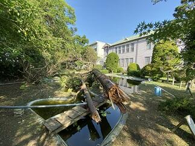


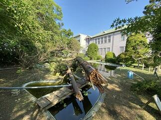
東郷池の復旧状況No.1
台風15号による影響で倒木により悲惨な状況であった東郷池も古川さん、友信さん、渡辺さんのご協力で少しづつ復旧に向けて進んでいます。大きな倒木は専門業者さんにお願いしないと撤去はできませんが、少しづつでも2次被害が出ないように自分たちでできる範囲で作業を進めていて、お陰様で大分見通しが良くなってきました。
被災直後の様子は→台風15号の爪痕
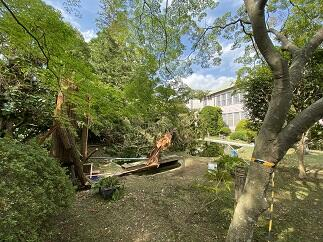


被災直後の様子は→台風15号の爪痕
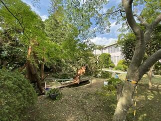
今日９月30日（月）は前期最後の日です。生徒は明日から３日間秋休みです。この間を利用してブリティッシュヒルズの英語研修やSSH国内サイエンスツアーなどが行われます。学校は後期の準備や台風の被害からの復旧を継続して行います。写真は今日の東郷池の復旧状況です。できることを一歩一歩着実に進めています。


関東高等学校カヌー選手権選抜大会第２日 祝！男子総合優勝
 大会2日目はすべての競技の決勝が行われます。天候は曇りのままで持ちそうです。
大会2日目はすべての競技の決勝が行われます。天候は曇りのままで持ちそうです。気温は現在14℃ですが、19℃くらいには上がりそうです。湖面は落ち着いた状態でこのまま良いコンディションで試合が行えることを望みます。（7:00時点）
<左の写真は朝の精進湖周辺と練習風景>
→続きは ≫続きを読む 祝！関東大会男子総合優勝 をクリックしてください！
お陰様で決勝にはとても良いコンディションで試合ができました。どの競技においても本校の選手は目標をしっかりと持って試合に臨みその持てる力を十二分に発揮しました。特に本校の強みであるフォア競技では女子カヤックフォアでは２位、男子はカナディアンフォアとカヤックフォアで１位などすばらしい結果でした。その結果として、男子は学校別対抗で総合優勝、女子は総合３位になりました。今まで自分や仲間を信じて顧問の先生方とともに日々頑張って来た結果が表れたと思います。おめでとうございます。今回の試合で得た多くの貴重な経験や思いはそれぞれが、次の目標に向けて努力する良い機会になったと思います。
また、マネージャーの中沢さんは本校の選手だけでなく配艇係として大会のスムーズな運営も完璧に支えてくれました。本当にありがとうございました。
そして、今日も応援に来ていただいた保護者やご家族の皆様ありがとうございました。
 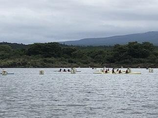
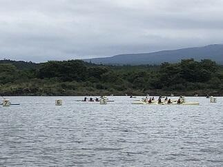
＜写真左 富士山を前に円陣組む選手たち＞＜写真中央 WK4決勝の様子＞＜写真右 閉会式 男子総合の表彰＞
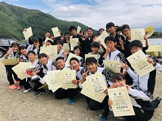


＜写真左 優勝カップと喜びの選手たち＞＜写真中央 保護者の方々への感謝＞＜写真右 菅澤先生から部員へのアドバイス＞
令和元年度関東高等学校カヌー選手権選抜大会第１日
9月21日（土）、22日（日）の2日間で令和元年度関東高等学校カヌー選手権選抜大会が山梨県南都留郡富士河口湖精進湖カヌー競技場で開催されます。第1日目の今日は、すべての競技の準決勝までの試合が行われました。朝から天気は曇りで天気予報では、雨が降ったり止んだりということでしたが、試合開始前にちょっとだけ降っただけで何とか持ちました。ただ、気温は15℃位でとても寒い一日でした。本校の選手諸君は開会式の後、いつもどおり円陣を組んで試合に臨みました。それぞれ、自分の設定した目標に向かって良いチャレンジができたと思います。明日行われるすべての競技の決勝に進出することができました。明日も目標に向かって良い試合ができることを期待します。今日も応援に来てくださった保護者やご家族の皆さんありがとうございました。明日も応援よろしくお願いします。
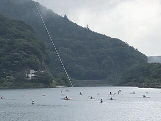

＜写真左 朝の精進湖周辺の様子と練習風景＞＜写真中央 開会式の様子＞＜写真右 円陣を作って気持ちを一つにする選手たち＞

 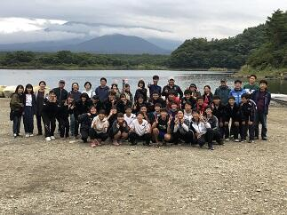
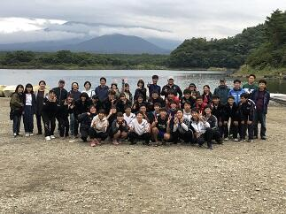
＜写真左 wk2準決勝のレースと応援風景＞＜写真中央 選手とともに記念撮影＞＜写真右 保護者の方々と選手たち＞
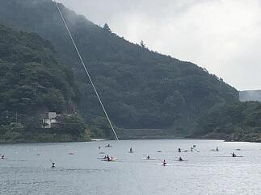
＜写真左 朝の精進湖周辺の様子と練習風景＞＜写真中央 開会式の様子＞＜写真右 円陣を作って気持ちを一つにする選手たち＞
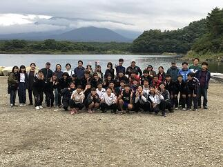＜写真左 wk2準決勝のレースと応援風景＞＜写真中央 選手とともに記念撮影＞＜写真右 保護者の方々と選手たち＞
早朝の風景

 今日9月10日は、朝の段階では、一部電車に運休や遅延が発生していて停電も復旧していない地区では信号が消えているところがたくさんあります。通勤通学の方は決して無理をしないようにお願いします。台風15号の爪痕が残る学校でも少しづつ復旧作業を行っているところです。そんななか、いつものように早朝から剣道部の皆さんが落葉や枝を掃除してくれていました。本当にいつもありがとう。感謝、感謝です。
今日9月10日は、朝の段階では、一部電車に運休や遅延が発生していて停電も復旧していない地区では信号が消えているところがたくさんあります。通勤通学の方は決して無理をしないようにお願いします。台風15号の爪痕が残る学校でも少しづつ復旧作業を行っているところです。そんななか、いつものように早朝から剣道部の皆さんが落葉や枝を掃除してくれていました。本当にいつもありがとう。感謝、感謝です。 台風15号の爪痕


 本日9月9日(月)未明にかけて暴風雨を伴って県内を直撃した台風15号は、東京湾を北上し朝5時頃に千葉市付近に上陸しました。千葉市では最大瞬間風速57.5ｍを観測し県内での観測史上最大を更新したそうです。この影響で県内では広く停電が発生しました。今現在も、停電が続いているなど暴風雨での多くの被害が千葉県の各地で報告されています。天気が回復した後の塩害も心配です。被災された方々には心からお見舞い申しあげると共に 復旧にご尽力されている皆様には感謝を申し上げるとともに安全に留意され一日も早く作業の終えられることをお祈りいたします。
本日9月9日(月)未明にかけて暴風雨を伴って県内を直撃した台風15号は、東京湾を北上し朝5時頃に千葉市付近に上陸しました。千葉市では最大瞬間風速57.5ｍを観測し県内での観測史上最大を更新したそうです。この影響で県内では広く停電が発生しました。今現在も、停電が続いているなど暴風雨での多くの被害が千葉県の各地で報告されています。天気が回復した後の塩害も心配です。被災された方々には心からお見舞い申しあげると共に 復旧にご尽力されている皆様には感謝を申し上げるとともに安全に留意され一日も早く作業の終えられることをお祈りいたします。今日は各社とも計画的に始発電車から運休しており、移動の主体は自家用車やバスなどの自動車となった訳です。それなのに今日の道路状況は普段と違い、高速道路は全面通行禁止で、一般道では信号機のほとんどが消えており、冠水して車が何台も浸かっていたり、電柱が折れていたり、倒木で道を塞いでいたりと走れる道路を探すのが一苦労でした。また、やっと走れる道を見つけても大渋滞と運転するのにとっても疲れました。学校に通勤するのに4時間かかりました。学校に着いて校舎施設や樹木などの被害状況を確認すると今回の台風のすごさを改めて実感しました。その一部ですが東郷池周辺の倒木(3本の檜、内2本は東郷池の中に枝を入れて倒れている)と記念館の屋根(中央タワーの屋根の支え板が破損)の被害状況をお知らせします。本当にこの光景を見た時は、いつも見慣れた風景がそこには無く、ショックを隠しきれませんでした。
→ 池の鯉の様子は ≫続きを読む 東郷池の鯉 をクリックしてください。

 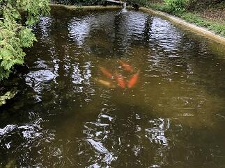台風15号で被害を受けた東郷池の現状です。倒木は池の中にその枝を入れた状態で倒れています。そんな中でもお陰様で鯉や鮒やメダカは無事でした。
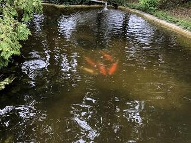台風15号で被害を受けた東郷池の現状です。倒木は池の中にその枝を入れた状態で倒れています。そんな中でもお陰様で鯉や鮒やメダカは無事でした。池の水の手作り循環濾過装置も無事に動いているので池の水自体はきれいです。鯉たちは元気に泳いでいます。
東郷池クリーン作戦
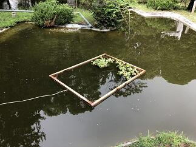 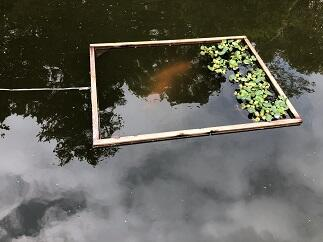東郷池は現在アオコが発生していてグリーンウオーター状態です。せっかく見えていた鯉の泳ぐ姿もわかりにくい状態です。そこで、少しでもアオコを除去して池の水を浄化する作戦を開始しました。対策は、水棲生物による浄化とろ過機によるアオコの除去の２方面作戦です。水棲生物の代表はヒメタニシとホテイアオイです。ヒメタニシは８月30日（金）に50匹を池に放しました。ホテイアオイは９月４日に池に入れました。手作りの池の水の循環濾過装置は濾過材を９月２日から新しくしました。結果が出てくれると良いのですが。
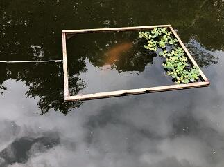東郷池は現在アオコが発生していてグリーンウオーター状態です。せっかく見えていた鯉の泳ぐ姿もわかりにくい状態です。そこで、少しでもアオコを除去して池の水を浄化する作戦を開始しました。対策は、水棲生物による浄化とろ過機によるアオコの除去の２方面作戦です。水棲生物の代表はヒメタニシとホテイアオイです。ヒメタニシは８月30日（金）に50匹を池に放しました。ホテイアオイは９月４日に池に入れました。手作りの池の水の循環濾過装置は濾過材を９月２日から新しくしました。結果が出てくれると良いのですが。
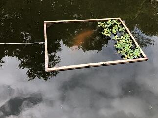東郷池は現在アオコが発生していてグリーンウオーター状態です。せっかく見えていた鯉の泳ぐ姿もわかりにくい状態です。そこで、少しでもアオコを除去して池の水を浄化する作戦を開始しました。対策は、水棲生物による浄化とろ過機によるアオコの除去の２方面作戦です。水棲生物の代表はヒメタニシとホテイアオイです。ヒメタニシは８月30日（金）に50匹を池に放しました。ホテイアオイは９月４日に池に入れました。手作りの池の水の循環濾過装置は濾過材を９月２日から新しくしました。結果が出てくれると良いのですが。 第74回千葉県合唱コンクール

 本日9月1日（日）に千葉・県民芸術祭～文化でつなぐ千葉のちから～第74回千葉県合唱コンクールの高等学校・大学職場一般部門が千葉県文化会館を会場に開催されました。本校の音楽部も女声合唱で出場しました。演奏曲は課題曲「飛翔ー白鷺」（「内なる遠き」から）（高野喜久雄 詩／高田三郎 曲）自由曲「O VOS OMNES」(おお すべての人よ)「SALVE REGINA」(栄えあれ、女王よ) （2曲ともKOCAR MIKLOS作曲）の3曲でした。声質も音程もすごくまとまってキレイなハーモニーでした。そして、各パートが互いの良さを引き出していて、声もとても良く出ていたと思います。この夏のコンクール出場経験や日々の練習から多くのことを学んだ成果が出ていたと思いました。音楽部の皆さんすばらしい演奏をありがとうございました。
本日9月1日（日）に千葉・県民芸術祭～文化でつなぐ千葉のちから～第74回千葉県合唱コンクールの高等学校・大学職場一般部門が千葉県文化会館を会場に開催されました。本校の音楽部も女声合唱で出場しました。演奏曲は課題曲「飛翔ー白鷺」（「内なる遠き」から）（高野喜久雄 詩／高田三郎 曲）自由曲「O VOS OMNES」(おお すべての人よ)「SALVE REGINA」(栄えあれ、女王よ) （2曲ともKOCAR MIKLOS作曲）の3曲でした。声質も音程もすごくまとまってキレイなハーモニーでした。そして、各パートが互いの良さを引き出していて、声もとても良く出ていたと思います。この夏のコンクール出場経験や日々の練習から多くのことを学んだ成果が出ていたと思いました。音楽部の皆さんすばらしい演奏をありがとうございました。 令和元年度カヌー新人大会
本日8月24日は令和元年度千葉県高等学校新人カヌー大会令和元年度関東高等学校選抜カヌー大会千葉県予選会が香取市黒部川カヌー場で行われました。大会で選考された選手は9月21日、22日に精進湖で行われる関東大会に出場します。レースコンディションとしては、風の影響で波が強く唯でさえ緊張していた初めての公式戦参加の1年生選手には思ったとおりにレース展開ができなかったかもしれません。逆に、主力となった2年生の選手の成長がすばらしく頼もしく見えました。選手の皆さんお疲れ様でした。すべての選手が今回のレースで得た課題を次の試合に向けて明日からの練習で修正していってもらえると思います。
今回も香取市水上スポーツ指導員の皆様にはいつも以上にお世話になりました。本当にありがとうございました。また、保護者の皆様にはいつも応援ありがとうございます。
 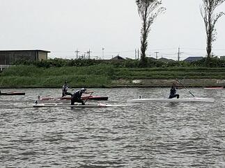
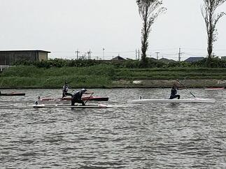
 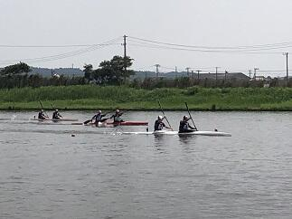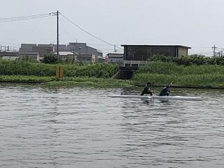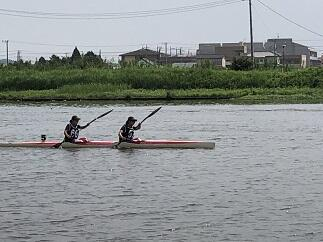
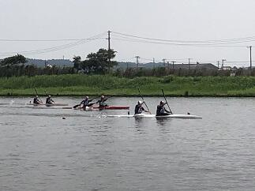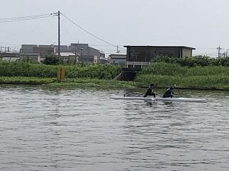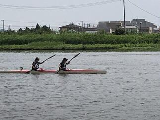


今回も香取市水上スポーツ指導員の皆様にはいつも以上にお世話になりました。本当にありがとうございました。また、保護者の皆様にはいつも応援ありがとうございます。
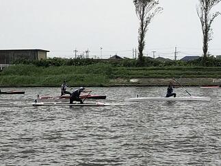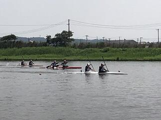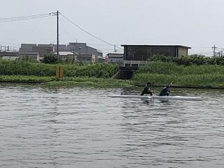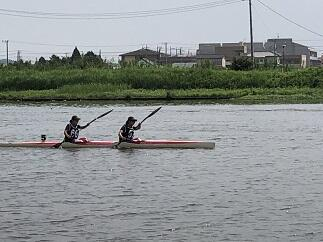 千葉県吹奏楽コンクール2019本選大会
 本日８月12日（月）第61回令和元年度千葉県吹奏楽コンクール2019本選大会（高等学校のA部門）が千葉県文化会館を会場に行われました。東関東大会への推薦校が決定される大会です。さすがに予選会を優秀な成績で通過した団体ばかりで、課題曲・自由曲どれもが団体の個性が出ていてどこも素晴らしく感動的な演奏ばかりでした。佐倉高校は演奏順番が1番でプレッシャーがかかるなか、日頃の成果を十分に発揮できたと思います。特に各楽器の個性が曲調のなかで曲の表現とともに十分に引き出された演奏が行われたと思います。素晴らしい演奏をありがとうございました。
本日８月12日（月）第61回令和元年度千葉県吹奏楽コンクール2019本選大会（高等学校のA部門）が千葉県文化会館を会場に行われました。東関東大会への推薦校が決定される大会です。さすがに予選会を優秀な成績で通過した団体ばかりで、課題曲・自由曲どれもが団体の個性が出ていてどこも素晴らしく感動的な演奏ばかりでした。佐倉高校は演奏順番が1番でプレッシャーがかかるなか、日頃の成果を十分に発揮できたと思います。特に各楽器の個性が曲調のなかで曲の表現とともに十分に引き出された演奏が行われたと思います。素晴らしい演奏をありがとうございました。 復活‼美しい東郷池

 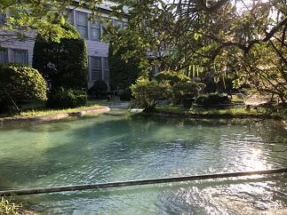
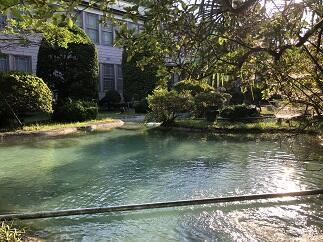

 先日お伝えした東郷池クリーンアップ作戦が功を奏して、鯉や鮒やメダカが泳ぐ姿が美しく映える東郷池が復活しました。とにかくうれしいかぎりです。まずはご覧ください。(上の写真は早朝の東郷池の風景です)
先日お伝えした東郷池クリーンアップ作戦が功を奏して、鯉や鮒やメダカが泳ぐ姿が美しく映える東郷池が復活しました。とにかくうれしいかぎりです。まずはご覧ください。(上の写真は早朝の東郷池の風景です) 
 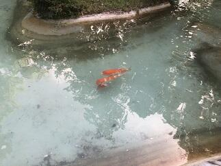
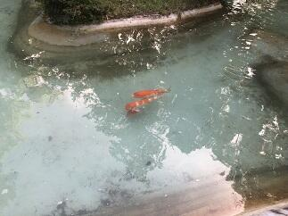

 池の中の鯉たちは新しい東郷池の環境に慣れてきたようで、ひと安心です。（夕方の東郷池の風景です）
池の中の鯉たちは新しい東郷池の環境に慣れてきたようで、ひと安心です。（夕方の東郷池の風景です） 東郷池の水全部抜く！


 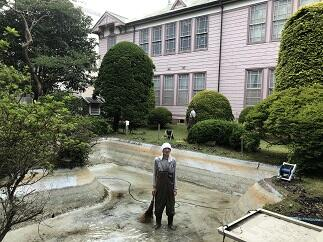
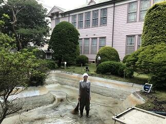 東郷池のきれいな水の中を鯉がゆうゆうと泳ぐ姿を見たいということで、昨年からいろいろな手段を使って東郷池クリーンアップ作戦を行って参りましたが、残念ながら緑に濁った池の水を変えることができませんでした。ということで、とりあえずまず池の水を全部抜いて池を掃除して新しい水に入れ替えてみようということで今日、東郷池の水全部抜いてみました。朝6時から夕方の6時まで12時間かかりましたが掃除ができました。
東郷池のきれいな水の中を鯉がゆうゆうと泳ぐ姿を見たいということで、昨年からいろいろな手段を使って東郷池クリーンアップ作戦を行って参りましたが、残念ながら緑に濁った池の水を変えることができませんでした。ということで、とりあえずまず池の水を全部抜いて池を掃除して新しい水に入れ替えてみようということで今日、東郷池の水全部抜いてみました。朝6時から夕方の6時まで12時間かかりましたが掃除ができました。古川さん、友信さん、高木事務長さんありあがとうございました。掃除してわかったのは、思いのほか綺麗になりとってもうれしかったです。なお、池にいる鯉、鮒、メダカには池の準備ができるまで用意した水槽に移住してもらいました。
令和元年度全国総合体育大会カヌー競技大会第2日


 本日8月４日は令和元年度全国高等学校総合体育大会カヌー競技大会の500ｍの第2日目の競技が鹿児島県伊佐市菱刈カヌー競技場で行われます。第２日目は各種目の決勝が行われます。生徒は早朝から会場入りしアップを行って、8:00からのレースに臨みます。天気予報では本日も天気は腫れで暑くなりそうです。良いレースができることを期待します。(会場にはトンボがすごくいっぱい飛んでいました。)
本日8月４日は令和元年度全国高等学校総合体育大会カヌー競技大会の500ｍの第2日目の競技が鹿児島県伊佐市菱刈カヌー競技場で行われます。第２日目は各種目の決勝が行われます。生徒は早朝から会場入りしアップを行って、8:00からのレースに臨みます。天気予報では本日も天気は腫れで暑くなりそうです。良いレースができることを期待します。(会場にはトンボがすごくいっぱい飛んでいました。) 


 台風8号の接近が予想されているため、明日５日、明後日６日に予定されていた200ｍ競技については中止になりました。大変残念ですが今年度の総体のカヌー競技スプリントの部は今日の500ｍ決勝で終わりとなりました。気力の充実した実力伯仲の選手たちが繰り広げた決勝は、最後の最後の一漕ぎまで結果がわからない手に汗にぎるレースばかりでした。選手の皆さん本当にお疲れ様でした。そして最後まで感動をありがとうございました。
台風8号の接近が予想されているため、明日５日、明後日６日に予定されていた200ｍ競技については中止になりました。大変残念ですが今年度の総体のカヌー競技スプリントの部は今日の500ｍ決勝で終わりとなりました。気力の充実した実力伯仲の選手たちが繰り広げた決勝は、最後の最後の一漕ぎまで結果がわからない手に汗にぎるレースばかりでした。選手の皆さん本当にお疲れ様でした。そして最後まで感動をありがとうございました。さて、千葉県選手団の結果ですが、本校から決勝に進出したC4では入賞はできませんでしたが、素晴らしいスタートを切れたレースでした。小見川高校が出場した男子K1は6位、女子K1は1位、K2は2位、K4は1位と昨年に続く素晴らしい結果でした。おめでとうございます。最後まで、応援してくださったOBや選手のご家族の皆さんありがとうございました。選手は最高の舞台で多くの刺激を受けるとともに多くのことを学ぶことができたと思います。そして、また一段と成長することができたと思います。これからもここまで努力してきた経験を多くの場面で生かしていってください。
令和元年度全国総合体育大会カヌー競技大会第１日

 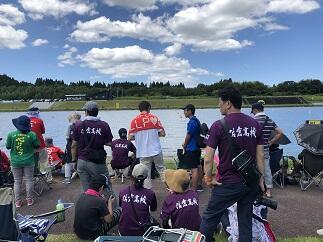
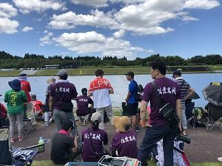


 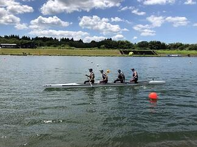
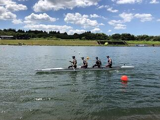


 本日8月3日は令和元年度全国高等学校総合体育大会カヌー競技大会の500ｍ競技の第１日目が鹿児島県伊佐市菱刈カヌー競技場で行われました。本日は、すべての種目の予選と準決勝が行われました。本校からは、男子のK４、C４、K２、C２、C1の5種目に出場しました。猛暑の中、全国から集まった選手たちは最後の最後まで持てる力を十分に発揮して素晴らしいレースを繰り広げていました。選手の皆さん、お疲れ様でした。それと共に感動をありがとうございました。本校からはC4で明日の決勝に進出することができました。千葉県選手団としては、小見川高校から女子K４、K2、K1、男子K1で明日の決勝に進出しました。おめでとうございます。明日の決勝もここまで共に頑張ってきた仲間と自分を信じてレースを楽しんで欲しいと思います。あわせて、カヌー部OBや選手のご家族の皆さん、応援いつもありがとうございます。明日も応援よろしくお願いします。
本日8月3日は令和元年度全国高等学校総合体育大会カヌー競技大会の500ｍ競技の第１日目が鹿児島県伊佐市菱刈カヌー競技場で行われました。本日は、すべての種目の予選と準決勝が行われました。本校からは、男子のK４、C４、K２、C２、C1の5種目に出場しました。猛暑の中、全国から集まった選手たちは最後の最後まで持てる力を十分に発揮して素晴らしいレースを繰り広げていました。選手の皆さん、お疲れ様でした。それと共に感動をありがとうございました。本校からはC4で明日の決勝に進出することができました。千葉県選手団としては、小見川高校から女子K４、K2、K1、男子K1で明日の決勝に進出しました。おめでとうございます。明日の決勝もここまで共に頑張ってきた仲間と自分を信じてレースを楽しんで欲しいと思います。あわせて、カヌー部OBや選手のご家族の皆さん、応援いつもありがとうございます。明日も応援よろしくお願いします。 合格祈願その２

 会議で京都に行く機会があったので、今回は北野天満宮に3年生の合格祈願に行ってきました。
会議で京都に行く機会があったので、今回は北野天満宮に3年生の合格祈願に行ってきました。北野天満宮でも宮司さんにご祈祷をお願いし拝殿に上がらせていただいて参拝してまいりました。宮司さんから来年3月末日まで毎朝ご神前にてご祈祷していただける旨お伺いしました。本当にありがたいことです。ご祈祷のあと、合格祈願の絵馬を奉納させていただきました。
北野天満宮は、菅原道真公をご祭神としておまつりする全国約1万2000社の天満宮、天神社の総本社だそうです。ところで、菅原道真公といえば梅ですが、広く境内を使って梅干しの土用干しがされていて、おいしそうな梅酢の香りが辺り一面をやさいく包んでいました。
合格祈願その１
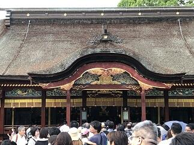大宰府天満宮で３年生の合格祈願をしてきました。宮司さんにご祈祷をお願いし本殿に上がらせていただいて参拝してまいりました。宮司さんから太宰府天満宮は、菅原道真公の御墓所の上にご社殿を造営し、その御神霊を永久にお祀りしている神社であることをお聞きしました。３年生の諸君、将来の夢の実現に向けて頑張ってください。応援してます。
第43回全国高等学校総合文化祭
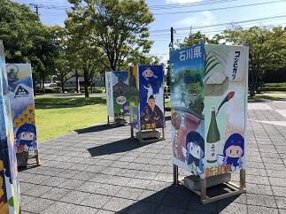 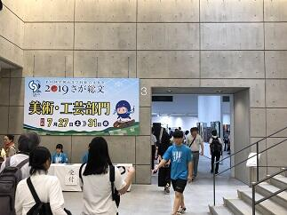
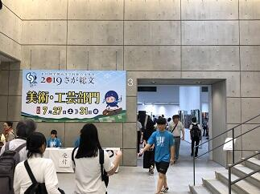


 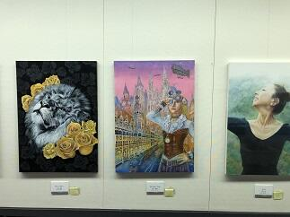
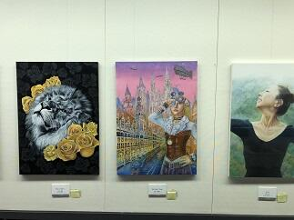 今年度の全国高等学校総合文化祭は佐賀県で開催されています。美術・工芸部門は佐賀県立の博物館と美術館を会場に7月27日から31日まで作品の展示が行われています。そこには、全国から選ばれた絵画、版画、彫刻、デザイン、工芸、映像など約400点の作品が展示されています。本校からも県の代表として美術・工芸部門で吉原さんの作品が出展されています。吉原さんの作品は制作日数も約９か月という大作で、部分ごとに違った多くの素材や制作技法が施されていて、しかも完成度が高いものとなっていました。展示されているどの作品も目を奪われ感動するものばかりでした。全国から参加している生徒たちには、期間中に、他の生徒たちとともに、グループ活動や専門家による研修会など多くの学びの機会が用意されています。これらにより知識やスキルの向上はもとより、多くの刺激を受けることで更なる創作意欲が膨らむ素晴らしい機会になっていると思います。
今年度の全国高等学校総合文化祭は佐賀県で開催されています。美術・工芸部門は佐賀県立の博物館と美術館を会場に7月27日から31日まで作品の展示が行われています。そこには、全国から選ばれた絵画、版画、彫刻、デザイン、工芸、映像など約400点の作品が展示されています。本校からも県の代表として美術・工芸部門で吉原さんの作品が出展されています。吉原さんの作品は制作日数も約９か月という大作で、部分ごとに違った多くの素材や制作技法が施されていて、しかも完成度が高いものとなっていました。展示されているどの作品も目を奪われ感動するものばかりでした。全国から参加している生徒たちには、期間中に、他の生徒たちとともに、グループ活動や専門家による研修会など多くの学びの機会が用意されています。これらにより知識やスキルの向上はもとより、多くの刺激を受けることで更なる創作意欲が膨らむ素晴らしい機会になっていると思います。
関連ページ→工芸部 全国高等学校総合文化祭
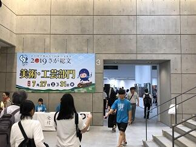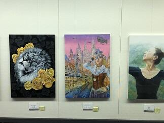今年度の全国高等学校総合文化祭は佐賀県で開催されています。美術・工芸部門は佐賀県立の博物館と美術館を会場に7月27日から31日まで作品の展示が行われています。そこには、全国から選ばれた絵画、版画、彫刻、デザイン、工芸、映像など約400点の作品が展示されています。本校からも県の代表として美術・工芸部門で吉原さんの作品が出展されています。吉原さんの作品は制作日数も約９か月という大作で、部分ごとに違った多くの素材や制作技法が施されていて、しかも完成度が高いものとなっていました。展示されているどの作品も目を奪われ感動するものばかりでした。全国から参加している生徒たちには、期間中に、他の生徒たちとともに、グループ活動や専門家による研修会など多くの学びの機会が用意されています。これらにより知識やスキルの向上はもとより、多くの刺激を受けることで更なる創作意欲が膨らむ素晴らしい機会になっていると思います。関連ページ→工芸部 全国高等学校総合文化祭
野球応援No.3

 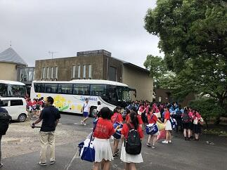本日７月17日（水）14:00からマリンスタジアムで市立柏高校との試合が予定されています。この試合に向けて本校応援団もバスで移動しました。皆さん、今日も応援よろしくお願いいたします。
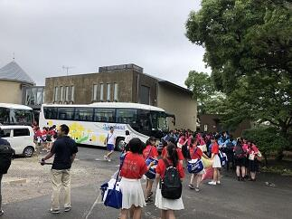本日７月17日（水）14:00からマリンスタジアムで市立柏高校との試合が予定されています。この試合に向けて本校応援団もバスで移動しました。皆さん、今日も応援よろしくお願いいたします。→ たくさんの応援ありがとうございました。
応援団の皆さん、佐倉高校の応援は気持ちがこもっていて、とっても暖かい素晴らしい応援でした。今日の試合は負けてしまいましたが、野球部の皆さん今年の夏の大会もたくさんの感動をありがとうございました。また、たくさんの皆様の応援ありがとうございました。今後ともよろしくお願いいたします。
カヌー競技国体関東ブロック大会
 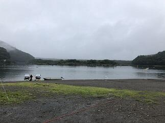今日は山梨県の精進湖でカヌースプリント競技の国体の関東ブロック大会が行われます。昨日の予報では競技時間に大雨の予想でしたが、予報より早く大雨が通り過ぎてくれたので、このままいけば10:00には少しでも良いコンディションで競技ができそうです。
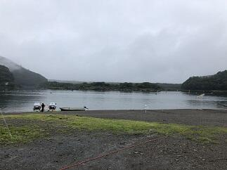今日は山梨県の精進湖でカヌースプリント競技の国体の関東ブロック大会が行われます。昨日の予報では競技時間に大雨の予想でしたが、予報より早く大雨が通り過ぎてくれたので、このままいけば10:00には少しでも良いコンディションで競技ができそうです。なお、高校生が出場する少年の部では７つの競技（少年男子・女子それぞれでカヤックシングル、カヤックペア、少年男子のカナディアンシングル、カナディアンペアとカヤックフォア）が行われます。
→ 祝 国体出場決定への続きは下の>>続きを読むをクリックしてください。


 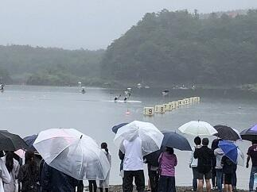
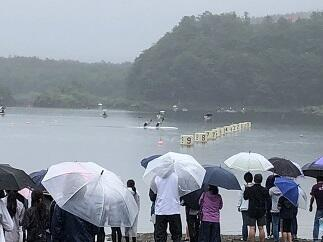 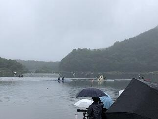
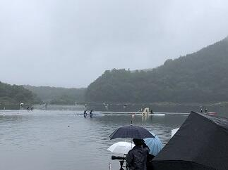


9:00から大会の開会式が行われました。開会式では本大会を主管する千葉県カヌー協会本清秀雄会長から選手の皆さんへのご挨拶や選手代表の宣誓などが行われました。本大会では関東の各都県の１位の代表選手が集まって行われる競技となります。大会委員長の千葉県スポーツ協会の青木寛専務理事や多くの保護者の方々が見守るなか10:00から予定通りに競技が開始されました。雨は途切れませんでしたが、霧雨のような状態が多く、富士山や周りの山からの吹きおろしの風が無かったので湖面も落ち着いた状態で競技を行うことができました。各種目ごとに決められた通過数までの順位の人だけが10月に茨城県神栖市神之池カヌー場でおこなわれる国体に出場できます。今回の結果は千葉県としては少年の部において７種目中５種目で国体に出場できることになりました。本校からもカナディアンシングルとカヤックフォアの2種目で県代表として選手が出場することが決まりました。おめでとう！！今回の大会で得ることができた多くのことを生かして国体での入賞を目指して励んでもらいたいと思います。最後に、大会運営をされた千葉県カヌー協会、山梨県カヌー協会の皆様ありがとうございました。また、保護者の皆様、OB,OGの皆様、今日も応援ありがとうございました。これからもよろしくお願いいたします。
野球応援No.2
本日の流通経済大学付属柏高校との対戦は、２－１で本校の勝利で次の試合に進むことができました。野球部の選手のみんなが明るく自信に満ちていて、終始落ち着いた表情で試合に臨んでいることにいつも感心させられます。特に守備については冷静な判断と確かな技術でプレーしている姿に観ている我々が本当に落ち着いて試合を観ていることができました。自分と一緒に練習を頑張ってきた仲間や先生を信じてプレーすることのできるすばらしいチームだとあらためて感じました。さらに、選手を支えてくれたのは応援席から応援し続けてくださった人たち。その人たちからの声や思いがどれだけ選手を元気づけてくれたことか本当に感謝にたえません。本校の応援席は応援団や先生方、生徒に加え保護者の皆様や野球部OBの方々等多くの方が応援に来てくださり、写真にあるように満杯でした。多くの人たちが思いを一つにできる応援ってすばらしいですね。今日も応援本当にありがとうございました。次は市立柏高校とマリンスタジアムで７月15日（月）14:00に試合開始予定です。ただし、明日の天候によっては明日以降の試合が順延になることも考えれますので試合の開催日程については大会ホームページでご確認ください。次も応援よろしくお願いいたします。
→なお、追加情報は写真の下の>>続きを読むをクリックしてください。
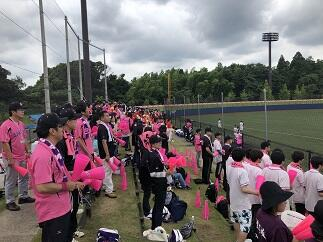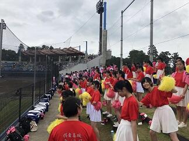

 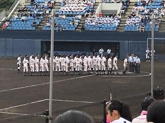
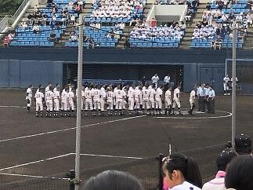

 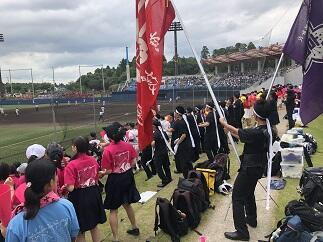
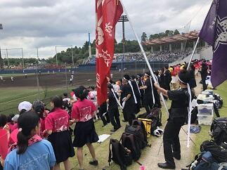


→なお、追加情報は写真の下の>>続きを読むをクリックしてください。
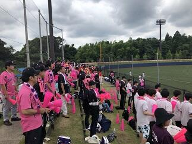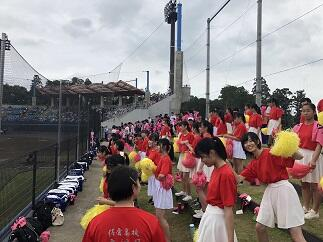
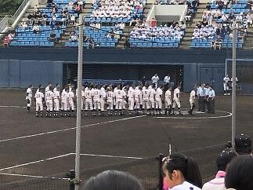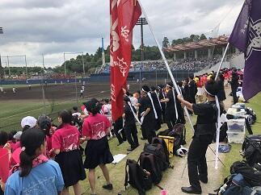
長引く梅雨の影響で、本日（７月16日）に予定されていた千葉大会第３回戦の試合も明日（７月17日）に順延となりました。台風も接近しているようで梅雨前線への影響もかなり予想されているため試合を予定どおり実施するのが難しい状況が続きそうです。つきましては大会日程について大会ホームページをご確認くださるようお願いいたします。
→７月17日（水）7:40現在今日の試合は予定通り行うそうです。応援よろしくお願いします。
→７月17日（水）7:40現在今日の試合は予定通り行うそうです。応援よろしくお願いします。